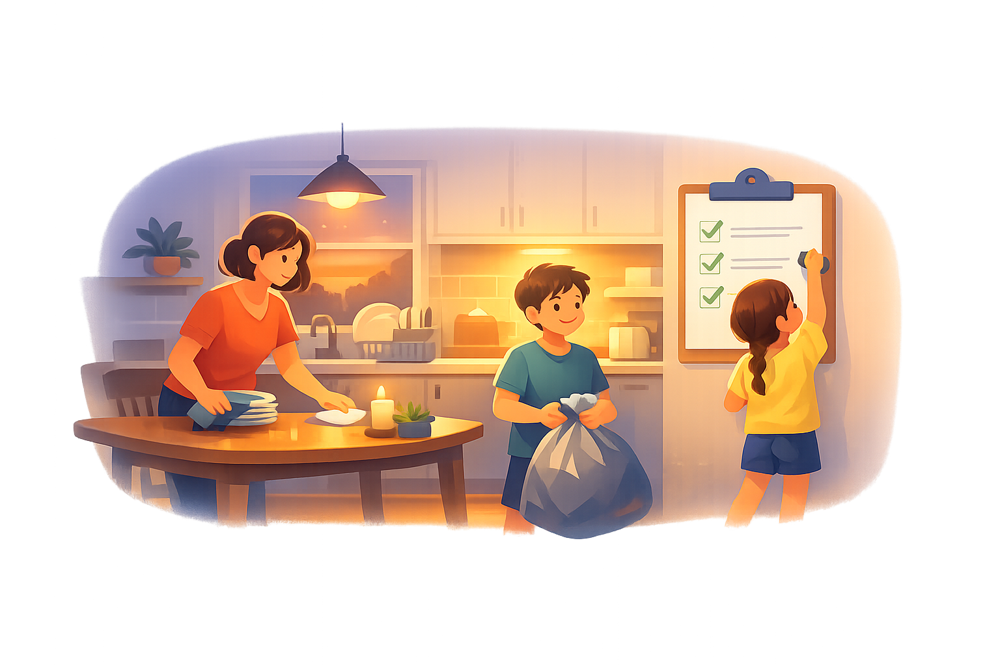

DestinationPersonalizeReflect

Less reminding, more visible ownership
A calmer home starts with a shared rhythm everyone can see.
ChorePilot helps your household feel lighter by making the next right responsibility obvious, fair, and easier to follow through on together.
Fairer handoffsDishes, laundry, and resets stop drifting to one person.
Calmer eveningsBackpacks, dinner cleanup, and tomorrow prep feel coordinated.